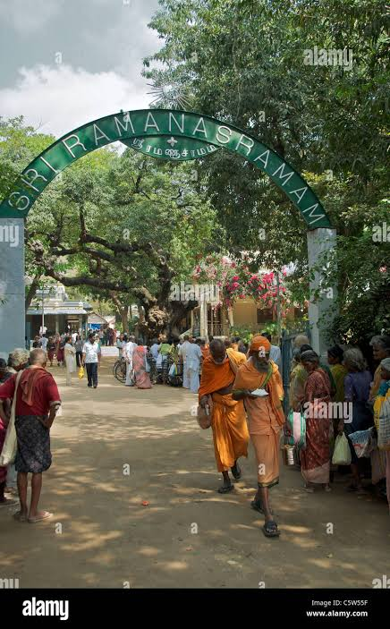

Sri Ramana Ashramam
Sri Ramana Ashramam is one of the most peaceful and spiritually important places in Tiruvannamalai. It is dedicated to Bhagavan Sri Ramana Maharshi, a great saint who taught self-enquiry and inner silence.
Devotees visit this ashram for meditation, prayer, peace of mind and spiritual guidance.
Famous For: Meditation, Ramana Maharshi Samadhi, Peaceful Ashram
Distance: Around 2 km from Arunachaleswarar Temple
Best Time: Morning and evening
Open Route Map: View Route
Distance: Around 2 km from Arunachaleswarar Temple
Best Time: Morning and evening
Open Route Map: View Route


